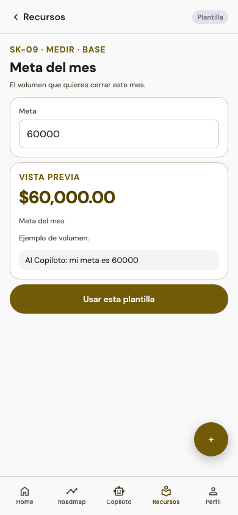

01 / Ana + Jorge · Antes de abrir
HORA SIMULADA08:45
Habilidad de ejemplo: preguntar antes de presentar

Simulación de uso · agentes de IA
Llegar con una intención.
Ana elige una habilidad y prepara una pregunta para el agente de IA antes de abrir la jornada.
Ana“Hoy quiero escuchar mejor antes de presentar.”
Jorge“Elige una pregunta que te ayude a entender qué buscan.”
PREGUNTA PROPUESTA PARA EL AGENTE DE IA
«Quiero practicar escucha. Ayúdame a preparar una pregunta abierta.»
EN LA APLICACIÓN
Consultar Hoy y la plantilla Meta del mes.
CONTEXTO Y FUENTE
Meta del mes es una plantilla de la demo. No se observó una hoja SMART equivalente al montaje; sus valores no pertenecen a Ana. Interfaz capturada el 7 de noviembre de 2026; historia y fotografía ilustrativas.